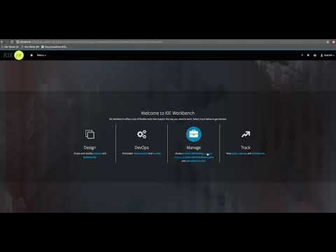

Improved KIE Server documentation
In the upcoming 7.5 release, users will finally see more information about the available REST endpoints of KIE Server. The runtime documentation has been completely rewritten and is now based on Swagger. It replaces previous docs and thus is available at exact same location
I would like to thank Duncan Doyle who was the initiator of this work and actually contributed the replacement of the docs. Another great example that contribution is a win win :)
http://localhost:8080/kie-server/docs
You might need to adjust the host, port and context path depending on your system setup.
So what’s new in this documentation?
- finally it actually documents the endpoints and not only list them
- presents only enabled KIE server extensions’ endpoints
- is built as KIE Server extension so it can be disabled, e.g. production deployments
- provides direct possibility to try given endpoint out
- shows all possible parameters and they expected values
- gives curl like examples if needed to try it out from command line
Personally I think that the most important features are:
- possibility to directly try it out
- shows only endpoints that are active at given server
Second feature is very useful as it does not make unnecessary noise when some of the extensions are disabled. For instance when KIE Server is used as decision service (BRM and DMN extensions only) then there is no need to show endpoints from BPM (which is the most verbose one – in terms of number of endpoints).
Take a look at this short screencast that illustrates it in action – showing how you can actually use the Swagger docs to run processes and user tasks.

An advantage is that now there is a rule in place that makes it mandatory to describe that way every and each REST endpoint being added to KIE Server.
Custom extensions can do that too, just make sure your custom endpoint class has swagger annotation on the type level and once added to KIE Server (and restarted) they will show up in the docs.
@Api(value=“NAME OF YOUR RESOURCE“)
An example can be found here
It’s all thanks to contribution
I would like to thank Duncan Doyle who was the initiator of this work and actually contributed the replacement of the docs. Another great example that contribution is a win win :)
Note that this is first version of the docs and I’d like to encourage everyone to contribute to improve the docs. Now it’s way easier than it was before so … it’s up to you too now :)